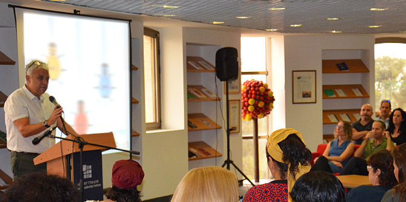

On October 27, 2016, the 19 fellows of Cohort 24 of the Mandel School for Educational Leadership presented posters on their areas of interest to Professor Jehuda Reinharz, president of the Mandel Foundation, Moshe Vigdor, director general of the Mandel Foundation–Israel, and members of the Mandel community.
“The poster presentations are one stop among many experiences that serve as an exercise in shorthand and develop the ability to convey our messages in a minimum of words,” said Danny Bar Giora, director of the School.
“A Mandel poster is a visual presentation that summarizes the fellows’ areas of interest and where they want to leave their imprint on the world,” said Dr. Neta Sher-Hadar, the faculty member who guided the fellows in developing their posters. “The fellows are now at the start of the process; this is a first step in the educational journey on which they are embarking during the coming year. The posters they design have three goals: they serve as a preliminary statement of interest, they are an exercise in moving between languages of representation, and they introduce the second year students to the Mandel community.”
To view the posters, click here

{kind=link}